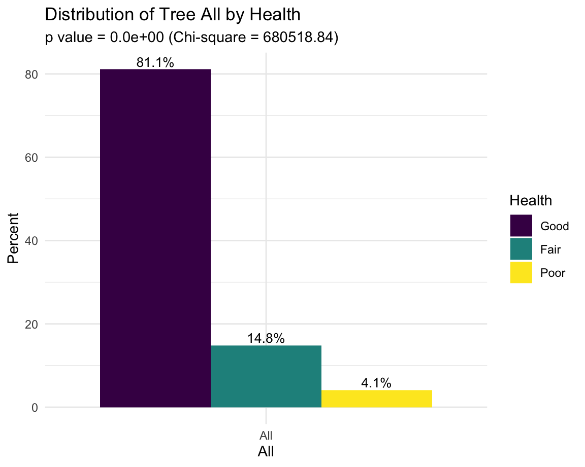

trees_2015 <- read_csv("large_tree_data/2015_tree_raw.csv", na = c("", "NA", "Unknown")) |>
janitor::clean_names() %>%
mutate(spc_common = str_to_title(spc_common)) %>%
mutate(health = fct_relevel(health, c("Good", "Fair", "Poor")))## Rows: 683788 Columns: 45
## ── Column specification ──────────────────────────────────────────────────────────────────────
## Delimiter: ","
## chr (26): created_at, curb_loc, status, health, spc_latin, spc_common, stewa...
## dbl (19): tree_id, block_id, tree_dbh, stump_diam, postcode, community board...
##
## ℹ Use `spec()` to retrieve the full column specification for this data.
## ℹ Specify the column types or set `show_col_types = FALSE` to quiet this message.tree_status_df <- trees_2015 %>%
select(curb_loc, guards, sidewalk, health, status, problems,
borough,
root_stone, root_grate, root_other,
trunk_wire, trnk_light, trnk_other,
brch_light, brch_shoe, brch_other) %>%
mutate(health = fct_relevel(health, c("Good", "Fair", "Poor")),
borough = as.factor(borough),
All = as.factor("All"),
curb_loc = case_match(curb_loc,
"OffsetFromCurb" ~ "Offset From Curb",
"OnCurb" ~ "On Curb"),
curb_loc = as.factor(curb_loc),
guards = as.factor(guards),
sidewalk = case_match(sidewalk,
"NoDamage" ~ "No Damage",
"Damage" ~ "Damage"),
sidewalk = as.factor(sidewalk),
status = as.factor(status),
problems = as.factor(problems)
) %>%
rename(`Curb Location` = curb_loc,
Borough = borough,
Guards = guards,
Sidewalk = sidewalk,
Status = status,
Health = health,
Problems = problems,
`Roots with Stones` = root_stone,
`Roots in Grate` = root_grate,
`Root Problem (Other)` = root_other,
`Trunk has Wires` = trunk_wire,
`Trunk has Lights` = trnk_light,
`Trunk has Other Problem` = trnk_other,
`Branches have Lights` = brch_light,
`Branches with Shoes` = brch_shoe,
`Branches Problem (Other)` = brch_other) %>%
select(Borough, All, everything())
colnames(tree_status_df)## [1] "Borough" "All"
## [3] "Curb Location" "Guards"
## [5] "Sidewalk" "Health"
## [7] "Status" "Problems"
## [9] "Roots with Stones" "Roots in Grate"
## [11] "Root Problem (Other)" "Trunk has Wires"
## [13] "Trunk has Lights" "Trunk has Other Problem"
## [15] "Branches have Lights" "Branches with Shoes"
## [17] "Branches Problem (Other)"exposure_options <- colnames(tree_status_df)[1:5]
outcome_options <- colnames(tree_status_df)[6:length(tree_status_df)]effective_tree_protection <- function(df, exposure_str, outcome_str){
# Convert character strings to symbols
exposure_sym <- rlang::sym(exposure_str)
outcome_sym <- rlang::sym(outcome_str)
# Make contingency table for the chi-square test
contingency_table <- df %>%
filter(!is.na(!!exposure_sym), !is.na(!!outcome_sym)) %>%
group_by(!!outcome_sym, !!exposure_sym) %>%
count(!!outcome_sym, !!exposure_sym) %>%
pivot_wider(names_from = !!exposure_sym, values_from = n)
# Perform the chi-square test
chisq_test_result <- chisq.test(contingency_table[-1])
chi_square <- chisq_test_result$statistic
p_value <- chisq_test_result$p.value
# Visualize the distribution differences
plot_title <- str_c("Distribution of Tree ", exposure_str,
" by ", outcome_str)
plot <- df %>%
filter(!is.na(!!exposure_sym), !is.na(!!outcome_sym)) %>%
group_by(!!exposure_sym, !!outcome_sym) %>%
summarize(n = n(), .groups = 'drop') %>%
group_by(!!exposure_sym) %>%
mutate(Percent = n / sum(n) * 100) %>%
ggplot(aes(x = !!exposure_sym, y = Percent, fill = !!outcome_sym)) +
geom_bar(stat = 'identity', position = 'dodge') +
geom_text(aes(label = sprintf("%.1f%%", Percent)),
position = position_dodge(width = 0.9),
size = 3.5,
vjust = -0.3) +
labs(title = plot_title,
subtitle = sprintf("p value = %.1e (Chi-square = %.2f)", p_value, chi_square))
return(plot)
}renderPlot({
effective_tree_protection(df = tree_status_df,
exposure_str = input$exposure,
outcome_str = input$outcome)
})#knitr::kable(contingency_table)
effective_tree_protection(df = tree_status_df, exposure = "All", outcome = "Health")